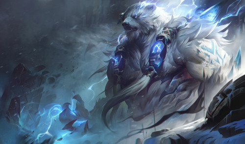

Volibear ❨para os mais íntimos urso da Coca-Cola, voliba e voliurso❩ é um campeão do MOBA League of Legends. É classficado como Tank/Lutador, pois possui a capacidade de permanecer por bastante tempo em uma luta, além de causar toneladas de dano.
A Tempestade Implacável, assim chamado por aqueles que conhecem de perto a personificação da destruição, era adorada como uma divindade lá na região de Freljord ❨basicamente a terra dos vikings❩, mas após certos conflitos com as irmãs Serilda, Avarossa e Lissandra, juntamente com a passividade de seu irmão Ornn, o Urso dos Mil Flagelos caiu em certo esquecimento e sua adoração ficou restrita aos ursine, o grupo de seguidores fanáticos transformados em bestas através do poder de Volibear.
Eis as runas que eu uso quando jogo (em lane) com essa fofura chamada Volibear:
Usada em composições onde é necessário um tank no time, além de ser muito boa para realizar trocas curtas. Eu geralmente uso nessas matchups:
Runa usada por mim quando jogo na Jungle, mas também pode ser usada no Top quando há necessidade de matar o inimigo rapidamente e/ou para trocar muitas vezes durante a fase de rotas, pois uma vez ativada, causo dano aumentado durante 6 segundos. As matchups são as seguintes:
Tirando o Tryndamere, a Illaoi e o Singed, todos os demais campeões são de longa distância, e o PTA serve justamente para amplificar meu dano assim que consigo me aproximar deles (coisa que é difícil).
A runa do Conquistador serve para dar sustain e força adaptativa ao usuário em trocas longas. Eu uso essa runa em casos muito específicos, tanto é que eu me recordo apenas de 4 matchups:
Esse é o meu xodó. O Ritmo Fatal aumenta sua velocidade de ataque após bater no inimigo 6 vezes seguidas, e seu efeito só termina quando você sai do combate. Essa runa combina perfeitamente com a build AP do Volibear, já que ele ganha velocidade de ataque de acordo com seu Poder de Habilidade. A runa é utilizada na esmagadora maioria das minhas partidas, então vou listar algumas matchups onde eu simplesmente oblitero o meu rival ou necessito da mesma quantidade de velocidade de ataque que ele: